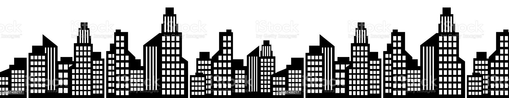

Re Construye
ReConstruye es una empresa fundada en 2020 por tres jóvenes arquitectos recién graduados de la Facultad de Arquitectura en Uruguay. Su enfoque principal es la construcción sostenible y el reciclaje de materiales en obras. El equipo cuenta con una amplia experiencia en el reciclaje de materiales y está comprometido con la creación de un futuro más sostenible y responsable con el medio ambiente. La empresa ofrece servicios de diseño y construcción personalizados para proyectos residenciales y comerciales. Cada proyecto es planificado y construido de manera eficiente y sostenible, utilizando materiales reciclados y técnicas innovadoras. Además, ReConstruye también ofrece servicios de asesoramiento y consultoría para aquellos que deseen incorporar prácticas sostenibles en sus proyectos existentes. El equipo de ReConstruye está altamente capacitado y comprometido con la calidad y la excelencia en cada proyecto. Su objetivo es superar las expectativas de sus clientes y garantizar la satisfacción total con cada proyecto finalizado. Si buscas una empresa de construcción que priorice la sostenibilidad y la responsabilidad ambiental, ReConstruye es la opción perfecta para ti.
En ReConstruye nos esforzamos por ser una empresa sustentable. Nuestro compromiso con el medio ambiente se refleja en todas nuestras operaciones, desde la elección de materiales hasta la gestión de residuos. Trabajamos para minimizar nuestro impacto en el planeta y fomentar prácticas sostenibles en todos nuestros proyectos.
Nuestro compromiso con el medio ambiente es uno de los pilares fundamentales de nuestra empresa. Nos esforzamos por crear soluciones innovadoras que respeten y protejan el entorno natural en el que operamos. Desde la elección de materiales hasta la implementación de técnicas de construcción sostenibles, buscamos reducir nuestra huella de carbono y minimizar el impacto de nuestras operaciones en el medio ambiente.
En ReConstruye estamos comprometidos con la innovación y la mejora continua. Nos esforzamos por mantenernos a la vanguardia de las últimas técnicas de construcción y materiales de construcción para ofrecer a nuestros clientes soluciones innovadoras y eficientes. Trabajamos en estrecha colaboración con nuestros clientes para garantizar que nuestras soluciones se adapten a sus necesidades y cumplan con sus expectativas.